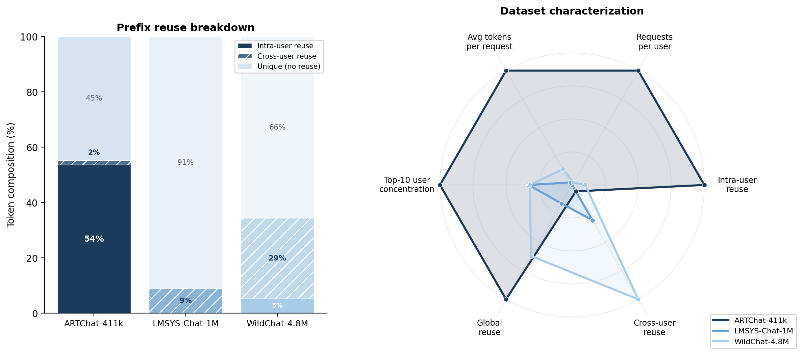
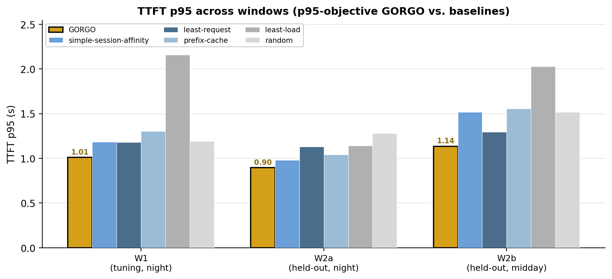
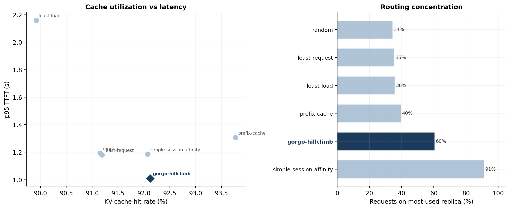

Why optimizing time-to-first-token alone quietly wrecks end-to-end latency — and how to route around it.

In an interactive LLM chat service, the number a user actually feels is time-to-first-token. Throughput, GPU utilization, dollars per million tokens — those are the operator's problems. TTFT is the user's. And on any single replica it is a sum of exactly three things: the network round-trip to that replica, the time the request waits queued behind others, and the prefill of its own prompt.
Modern inference engines — SGLang1, vLLM2 — expose a radix-tree prefix cache. An incoming request can skip prefill for any token prefix already resident on the replica that handles it. When prompts are long and prefixes recur, that saving dominates everything else: a 20,000-token prompt that lands on a replica holding a 90% prefix match has only about 2,000 tokens left to prefill — an order-of-magnitude cut to TTFT.
But the discount is entirely contingent on where the request is routed. Send it to a replica that has never seen the prefix and the saving is forfeit. Pile every request onto the one warm replica and it becomes a queueing bottleneck — the cache hit stops paying for itself. And the warm replica might be a region away: in our cluster, proxy-to-replica RTT ranges from 26 ms to 466 ms, an 18× spread, easily enough to swallow whatever the cache hit was supposed to save.
So the routing layer has to price three signals at once — cache locality, replica load, and network distance — and the standard heuristics each see exactly one. least-load watches the queue and ignores the cache. Prefix-aware routing5 chases the warmest cache and ignores the queue it builds. session-affinity hashes a user to a fixed replica: maximal reuse, zero load escape. Each is correct about its own axis and blind to the other two. On short, low-reuse traffic that blindness is cheap. On long-context multi-turn traffic it is not.
The public chat datasets the serving literature leans on quietly understate this regime. LMSYS-Chat-1M3 and WildChat-4.8M4 average roughly 470 and 2,925 input tokens per request, with intra-user prefix reuse below 10%. Most of WildChat's apparent reuse is cross-user boilerplate — shared chat templates, viral prompts — not a returning user extending a conversation. For a prefix-aware router, there is simply very little to win.
Our production trace tells a different story. ARTChat-411k is 411,169 chat-completion requests from 4,984 distinct users against a production GLM endpoint — about 82 requests per user. The average request carries 21,043 input tokens (45× LMSYS, 7× WildChat), and 53.7% of all tokens belong to a prefix the same user sent earlier.1 This is the regime where the joint cache / network / queue tradeoff actually decides TTFT — where landing a user on the replica that already holds their conversation saves more than half the prefill, and where getting it wrong costs whole seconds.
| Dataset | Requests | Users | Avg input tok | Intra-user reuse | Global reuse |
|---|---|---|---|---|---|
| LMSYS-Chat-1M | 1,000,000 | — | 467 | — | 9.0% |
| WildChat-4.8M | 3,199,860 | 1,833,730 | 2,925 | 5.3% | 34.4% |
| ARTChat-411k | 411,169 | 4,984 | 21,043 | 53.7% | 55.3% |
Figure 1 (the hero above) places the three datasets on the same axes. ARTChat-411k dominates every routing-relevant dimension — prompt length, multi-turn density, user concentration, intra-user reuse. It is not a harder version of the public benchmarks; it is a different operating point, and policies tuned on the public sets are graded on a problem that barely exists there.
GORGO scores every replica with a single additive cost and routes to the minimum. The three controllable terms of TTFT map directly onto three terms in the score: network round-trip, the prefill cost of the request's uncached tokens, and the decode cost of whatever is already queued on the replica. Tap any term below to unfold it.
The weights are not hand-tuned. There are no operator-chosen constants and no offline profiling pass; GORGO learns them online from live TTFT feedback. Three variants set the scalars three ways. gorgo-static freezes them. gorgo-autotune re-fits the two physical rate parameters — per-token prefill and decode rates — per replica from a trailing window.2 gorgo-hillclimb runs a Gaussian (1+1) evolution strategy over the weights in log-space, with the negative p95 TTFT of the rolling 64-request window as its objective: it accepts or rejects a candidate every 16 samples and adapts its step size by Rechenberg's 1/5-success rule.
One subtlety keeps the search honest. The three-weight form has a flat direction — only the ratios between weights change which replica wins, so an unconstrained search wanders along the overall scale. We collapse it by pinning own uncached prefill as the unit (w_prefill ≡ 1), leaving the two identifiable parameters w_rtt and w_queue. And the load term deliberately uses raw queued_tokens rather than only the cache-miss fraction — so a replica whose queue is full of cheap-to-prefill cache hits stays visible to the router instead of disappearing behind its own hit rate.
Across three 30-minute production windows — a nighttime tuning window, a nighttime held-out window, and a heavier midday window — the GORGO family posts the lowest TTFT at both p50 and p95 against five baselines: random, least-request, least-load, prefix-cache, and session-affinity.3 It is gorgo-hillclimb during tuning, then gorgo-static — deploying the frozen learned weights — on both held-out windows.
The interesting part is that the margin widens with load — from about 9% on the held-out nighttime window to roughly 12–25% at midday. The evolution strategy converged on a large load weight (w_load ≈ 6.38, against w_rtt ≈ 0.39), and that learned aggression toward load avoidance is exactly what rebalances the midday traffic a hash-based session-affinity policy cannot move. GORGO's p95 degrades only ~27% from night to midday; session-affinity's degrades 55%.

Here is the result that surprised us. GORGO does not win by getting a higher cache-hit rate. session-affinity gets the highest cache-hit rate of any policy — it pins every session to one replica, so the cache could hardly be warmer — and yet it posts among the worst p95 latencies, because that same pinning has no way to escape the load it concentrates. GORGO keeps most of that cache locality while staying balanced: it concentrates only moderately on warm replicas and prices the queueing that prefix-only routing refuses to see.

session-affinity earns the highest hit rate but the worst p95. Right: routing concentration (share on the most-used replica) against the uniform 33% line. GORGO concentrates moderately on warm replicas without the pathological imbalance of hash-based pinning.
Push on that mechanism and a deeper, more uncomfortable result falls out: optimizing TTFT alone reward-hacks toward single-replica concentration. The reason is continuous batching. A saturated replica still admits a new request's prefill and emits its first token roughly on schedule — TTFT is largely insensitive to how loaded the replica already is. What suffers is everything after the first token: the decode backlog dilutes the running batch, every decode step crawls, and end-to-end latency explodes. A TTFT-only objective therefore sees no penalty for herding traffic onto the one warm replica. Great first token; wrecked E2E.
A controlled load sweep makes it concrete. We replay the same window at three arrival rates — only the inter-arrival gaps change; the requests, their order, and the cache structure are fixed — and watch GORGO's standing improve monotonically as load backs off the saturation ceiling. At full load the three-replica fleet is over capacity for every policy, so cache-greedy concentration is merely "less bad" — with zero slack, minimizing total prefill work beats spreading it. At half load, GORGO lands within ~7% of session-affinity on TTFT p95 while winning E2E p95 by ~2.7× (5.6 s vs 15.5 s). At one-third load it wins every metric. The advantage scales inversely with saturation: the more headroom a fleet has — which is exactly the regime operators provision for — the more a load-aware router beats one that optimizes the first token alone.
The whole TTFT-vs-E2E tension is, in the end, an artifact of co-locating prefill and decode on one replica — the replica that wins the first token is the same one that then has to decode the request, so concentrating prefill is precisely what dilutes decode. Prefill/decode disaggregation breaks that link. Under DistServe6, Splitwise7, or Mooncake8, a request prefills in one pool and decodes in another; the decode dilution that destroys E2E is decoupled from the prefill routing decision GORGO is making. The router would then score only TTFT-relevant terms — RTT, uncached prefill, and prefill-pool queueing — and herding prefill onto a cache-warm worker would no longer blow up decode latency. The reward hack defuses itself. We have not run a disaggregated fleet yet; it is the obvious next experiment, and the cleanest direction this line of work points.
gorgo-autotune is omitted from the main production tables: at high prefix-hit rates the uncached-token count approaches zero, so its median-of-rates estimator inflates the per-token prefill rate and effectively blacklists a replica for reasons unrelated to load or cache. ↩